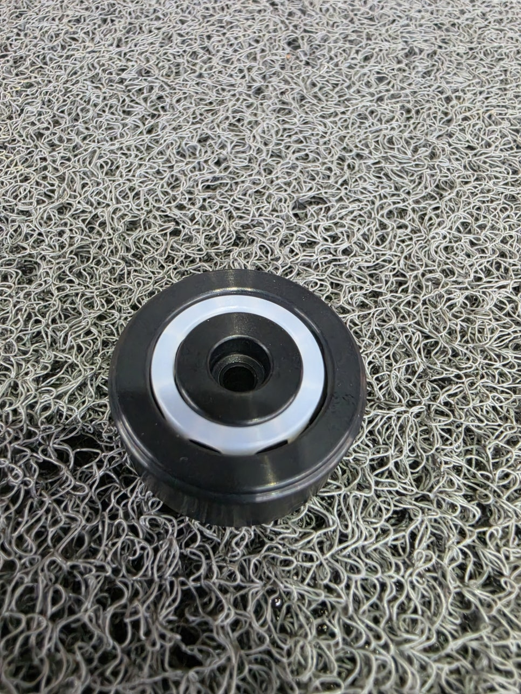

"PCB 에칭·도금 라인 컨베이어 롤러 제조사가 단종됐고, 설비 도면조차 남아있지 않습니다." 오래 가동한 PCB 장비일수록 흔한 상황입니다. 도면이 없어도 설비에 붙은 롤러 현품 하나만 있으면, 실측부터 역설계·가공까지 2주 안에 끝낸 사례가 있습니다. 어떤 절차로 진행됐는지 정리했습니다.

이해를 돕기 위한 롤러 예시 이미지 — 실제 PCB 컨베이어 롤러 형상과 다를 수 있습니다
박
박정훈 · KTN KOREA 기술총괄
20년 베어링 & 정밀 가공 기술 마이스터. 단종 부품 역설계·국산화 누적 2,479건. PCB·반도체 장비 현품 역설계 대응.
포브스코리아 CSV 대상 2026
2주
도면 없이 역설계 납품 사례
±0.001mm
역설계 가공 정밀도
2,479건
누적 역설계·국산화 실적
도면이 없다는 것, PCB 장비일수록 흔합니다
10년 이상 가동한 PCB 에칭·도금 라인은 컨베이어 롤러 도면 자체가 유실됐거나, 애초에 장비 제조사가 도면을 공유하지 않은 경우가 많습니다. 이 상태에서 롤러가 단종되면 "도면이 없으니 만들 수 없다"고 포기하기 쉽습니다. 하지만 설비에서 현품을 분리해 실측할 수 있다면, 도면 없이도 역설계가 가능합니다.
설비에서 분리한 롤러의 외경·내경·축 규격·표면 형상을 정밀 실측하고, 에칭액·도금액 노출 여부와 온도 등 설치 환경을 확인했습니다.
02
4~10일차 — 도면화 및 소재 선정
실측값으로 도면을 새로 만들고, 화학물질 노출 환경에 맞는 내화학 소재를 선정해 시제품 가공에 들어갔습니다.
03
11~14일차 — 시제품 검증 및 납품
시제품을 원래 설비 자리에 넣어 작동을 검증한 뒤 정식 납품했습니다.
저희는 역설계를 파는 회사가 아니라, PCB 라인이 다시 돌아가는 날짜를 약속하는 회사에 가깝습니다. 삼성SDI·SK하이닉스·LG디스플레이 라인의 이송·컨베이어 계열 부품 역설계 요청을 다뤄왔습니다.
해외 재주문 vs 현품 역설계
구분
해외 대체품 재주문
현품 기반 역설계
도면 필요 여부
정확한 도면·품번 필요
현품 실측만으로 가능
리드타임
통상 4~10주
표준 형상 기준 2주
재발 방지
동일 제조사면 재단종 위험 지속
도면 확보 후 재제작 가능
역설계 요청 전 준비할 것 3가지
✓
현품 확보 (또는 정밀 사진)
설비에서 분리 가능하면 현품이 가장 정확합니다.
✓
설치 환경 정보
에칭액·도금액 노출 여부, 온도, 분진 여부를 함께 확인합니다.
✓
설비 가동 재개 목표일
우선순위 판단을 위한 목표 일정을 공유해 주십시오.
발주 전 30초 체크 — 도면이 없다고 포기하기 전에 아래 3가지만 확인하십시오.
① 지금 라인에서 롤러 현품을 분리할 수 있는가?
② 설치 환경(온도·화학물질·분진)을 파악하고 있는가?
③ 설비 재가동 목표일이 정해져 있는가?
셋 다 확인됐다면, 해외 재주문보다 역설계가 훨씬 빠를 수 있습니다.
자주 묻는 질문
PCB 장비 컨베이어 롤러가 단종되면 어떻게 하나요?
해외 대체품부터 알아보기 전에, 설비에서 롤러 현품을 분리해 실측할 수 있는지부터 확인하는 것이 가장 빠른 대응입니다. 현품 실측이 가능하면 도면 없이도 동일 규격으로 역설계해 재현할 수 있습니다.
도면 없이 롤러를 역설계할 수 있나요?
가능합니다. 현품을 정밀 실측해 외경·내경·축 규격·표면 형상·소재 특성을 확인하면 도면 없이도 같은 규격으로 재현할 수 있습니다. 에칭·도금 라인처럼 화학물질에 노출되는 환경이라면 내화학 소재 선정까지 함께 검토합니다.
역설계 롤러도 원래 부품과 동일하게 작동하나요?
치수와 소재 특성을 원 부품 기준으로 맞추고, 설치 환경(화학물질 노출, 온도, 분진 여부)을 사전에 확인해 소재를 선정합니다. 시제품을 설비에 넣어 작동을 검증한 뒤 정식 납품하므로 동일 조건에서 문제없이 작동합니다.
역설계에 걸리는 기간은 얼마나 되나요?
현품 실측이 바로 가능하고 형상이 표준적인 롤러라면 실측부터 가공까지 2주 안에 끝낸 사례가 있습니다. 다만 내화학·내열 등 특수 소재이거나 형상이 복잡하면 시제품 검증 단계가 추가돼 기간이 늘어날 수 있습니다.
현품을 분리할 수 없으면 역설계가 불가능한가요?
현품 확보가 가장 정확하지만, 분리가 어려운 경우 정밀 치수가 표기된 사진과 설치 환경 정보만으로도 1차 검토가 가능합니다. 다만 정확한 재현을 위해서는 결국 현품 실측 단계가 필요하므로, 설비 점검 시점에 맞춰 분리 가능 여부를 확인해 두는 것이 좋습니다.
현품 실측부터 도면화·가공까지 건마다 즉시 작업 인력이 투입돼, 월 단위로 받을 수 있는 신규 역설계 건수를 제한하고 있습니다. 단, 도면이 남아있고 재고 여유가 있는 발주라면 이 정도 역설계는 필요 없습니다 — 꼭 KTN이 아니어도 됩니다.
간편 견적 요청
단종된 롤러 현품 사진과 설비 가동 재개 목표일만 남겨주시면 확인 후 연락드립니다. 제출 내용은 담당자 이메일로 바로 전달됩니다.